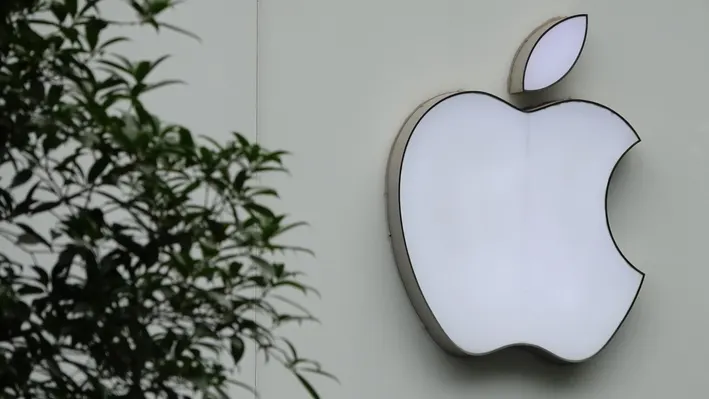

About Apple
The Apple StyleWriter was introduced in 1991 and brought high-quality inkjet printing to the masses.
Apple Inc., the company behind the StyleWriter, was founded in 1976 in Cupertino, California. Known for its innovation and design, Apple has been a leading force in the tech industry.Apple Inc. It is best known for its consumer electronics, software, and services. Apple's product lineup includes the stylewriter,iPhone, iPad, Mac, Apple Watch, Vision Pro, and Apple TV; as well as software like iOS, iPadOS, macOS, watchOS, tvOS, and visionOS; and services like Apple Card, Apple Pay, iCloud, Apple Music, and Apple TV+.